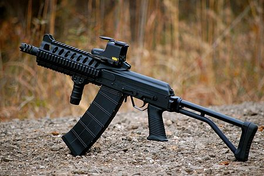

Shotgun : Akdal MKA 1919
Producător : Akdal Arms
Origine : Turcia
Muniție : 12 gauge
Akdal MKA 1919 este o pușcă cu gaz , semi-automată , care seamănă cu arma M16 și imită aspectul și plasarea unora dintre controale . A fost creat de compania turcă Akdal Arms . MKA 1919-ul utilizează o pompă convențională acționată de gaz , care se află în jurul tubului de sprijin care rulează sub țeava armei . Arcul de întoarcere (return spring) este , de asemenea, situat în jurul aceluiași tub de sprijin , care este ascuns de un handguard polimer extins . Pentru a încărca pușca , mânerul de încărcare de pe receptor trebuie tras . Receptorul superior este fabricat dintr-un aliaj de aluminiu în timp ce receptorul inferior , împreună cu mânerul pistolului și stocul de umăr , este fabricat ca o singură bucată din polimer rezistent la impact . Akdal MKA 1919-pușcă semi-automată , are un încărcător detașabil de 5 cartușe .
Arma are un șurub de presă identic în locație și funcție ca cel de pe M16 . Siguranța manuală , de asemenea , a fost duplicată după stilul armei M16 , fiind situată pe partea stângă a receptorului superior .
Atașamentele standard includ o țintă frontal instalat pe baza detașabilă în stil M16 și un mâner de transport detașabil în stil M16A2 , cu vedere încorporată la dioptrii . Pe receptorul superior , există o șină Picatinny integrală , care va accepta diferite ațașamente cum ar fi red dot-ul .
Preț actual : $400
Shotgun : Atchisson AA-12
Producător : Maxwell Atchisson , Jerry Baber , Military Police Systems
Origine : USA
Muniție : 12 gauge
AA-12 (Auto Assault-12) , proiectat inițial și cunoscut sub numele de Atchisson Assault Shotgun , este o pusca de luptă automată care a fost proiectată în 1972 de Maxwell Atchisson . Caracteristica cea mai proeminentă este reculul redus .
Versiunea curentă din 2005 a fost dezvoltat în cursul a 18 ani (începând din 1987) din momentul achiziționării schițelor de către Military Police Systems (MPS-fondat de Jerry Baber) . Designul original a stat la baza mai multor arme ulterioare , inclusiv pușca de luptă USAS-12 . Arma trage numai în modul complet automat . Cu toate acestea , rata of fire-ul relativ scăzut de aproximativ 300 de cartușe pe minut permite shooter-ului de a trage semi-automat cu apăsări foarte scurte asupra trăgaciului .
Acesta este alimentată prin încărcătoare de 8 , 20 sau 32 de cartușe .
Preț actual : $3.250
Shotgun : Akdal MKA 1919
Producător : Benelli Armi SpA
Origine : Italia
Muniție : 12 or 20 gauge (shells sau slugs)
Benelli M3 este un shotgun dual-mode (un hibrid format din o pompa de acțiune și mai este și semiautomat) .
Pusca a fost proiectată și fabricată de către producătorul italian de arme de foc Benelli Armi SpA și aceasta face parte din seria de arme semiautomate numită Benelli's "Super 90" .
În M3 pot încăpea maxim șapte cartușe și utilizează o proprietate a inerție care conduce sistemul de acțiune , prezentat pentru prima dată în M1 .
M3-ul este favorizat pentru că utilizatorului i se permite să alegă între modul semiautomat sau pompa de acțiune pentru funcționarea armei .
Pompa de acțiune este utilizată atunci când se folosește muniție mai puțin puternică , cum ar fi gloanțele de cauciuc , care nu generează suficient recul pentru a opera mecanismul semiautomat . În schimb , modul semiautomat poate fi utilizat cu muniție mai puternică , absorbind o parte din recul . Comutarea între cele două moduri se face prin manipularea inelului situat în partea din față a mânerului frontal .
Benelli M3-ul dispune , de asemenea , de un stoc detașabil care îi permite utilizatorului să alegă unul din cele două stiluri-stocul tradițional sau un stoc cu o prindere de tip pistol.
Preț actual : $3.000
Shotgun : Franchi SPAS-12
Producător : Franchi
Origine : Italy
Muniție : 12 gauge 2 3⁄4 inch shells only
Franchi SPAS-12 este o puscă de luptă fabricată de compania italiană de arme de foc Franchi din 1979 până în 2000 . SPAS-12 este o pușcă cu două moduri de trager , reglabilă pentru funcționarea semiautomată sau cu acțiune a pompei . SPAS-12 a fost vândut utilizatorilor militari și celor din cadrul poliție din întreaga lume , precum și pe piața civilă , și a fost prezentată în multe filme , emisiuni TV și jocuri video .
Apariția și scopurile propuse SPAS-12-ului au dus inițial la desemnarea sa "militară" ca o pusca de luptă . SPAS-12-le a fost numit "Special Purpose Automatic Shotgun" , datorită faptului că a fost menit soldaților . În 1990 , Franchi a redenumit pusca "Sporting Purpose Automatic Shotgun" , care a permis continuarea vânzărilor în Statele Unite .
Pentru ca shotgun-ul să poată fi achiziționat în continuare în America , a parut o limită asupra încărcătorului armei , model de stoc fixat în acest mod până în 1994 .
În urma deciziei făcute în cadrul United States Federal Assault Weapons Ban , importurile de SPAS-12-uri în Statele Unite a fost oprite . În septembrie 2004 interdicția a expirat , dar Franchi a încheiat producția Spas-12-ului în 2000 pentru a se concentra pe fabricarea modelului SPAS-15 .
Ultimele Spas-12-uri produse au fost vândute în țările care le acceptau pentru o sumă de US$1.500 .
Preț actual : $2.000-$2.500
Shotgun : Browning Auto-5
Producător : John Browning
Origine : SUA
Muniție : 12 gauge , 16 gauge , 20 gauge
Browning Automatic 5 , cel mai adesea cunoscută drept Auto-5 sau pur și simplu A-5 , este un shotgun semiautomat operat de recul .
Arma a fost proiectată de John Browning . A fost primul design de succes al sgotgun-urilor de tip semiautomate , și a rămas în producție până în 1998 . Numele puștii desemneaza faptul că este un autoloader cu o capacitate de cinci cartușe , patru în îcărcător și unul în țeava armei .
Remington Arms și Savage Arms au vândut variante numite Remington Model 11 și Savage Model 720 , care au fost aproape identice , doar că le lipsea capacitatea îcărcătorului pe care o deținea Browning-ul .
Această armă a fost produsă aproape o sută de ani (din 1900 până în 1998) de către diferiți producători .
Preț actual : $2.500

.png)
Shotgun : Saiga-12
Producător : Mikhail Kalashnikov , Kalashnikov Concern (firmă cunoscută și ca Izhmash)
Origine : Rusia
Muniție : 12-gauge , 20-gauge , .410
Saiga-12 este o pușcă disponibile într-o gamă largă de configurații , făcută după seria Kalashnikov de puști și numită după antilopa Saiga . La fel ca variantele de pușcă Kalashnikov , shotgun-ul este format dintr-un șurub rotativ , acționat de gaz, care își primește muniția dintr-un încărcător detașabil .
Toate configurațiile Saiga-12-ului sunt recunoscute ca arme kalashnikov , având caracteristicile și funcțiile specifice serie : pârghie de siguranță pe partea dreaptă a receptorului , șina de montare optică pe partea stângă a receptorului și dust cover-ul montat în partea de sus și ținut de către arcul de recul (recoil spring) .
Saiga-12 este fabricată de divizia de arme din Izhmash , în Rusia . Izhmash produce , de asemenea , Saiga 20s și Saiga 410s care folosesc muniție de tip 20-gauge and .410 bore , precum și Saiga semi-automatic hunting rifles .
Forțele armate ruse folosesc o variantă de shotgun de luptă numit KSK (Karabin Spetsialniy Kalahnikov, "Kalashnikov Special Carbine") , cu muniția de tip 12 gauge , dimensiunile acestei muniții fiind exprimată în echivalentul său metric de 18,5 mm .
Preț actual : $2.000-$2.500